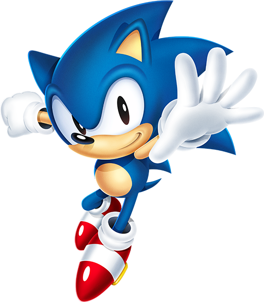

<div style="width:540px;height:405px;background:url('스타.jpg'); position:relative;">
	
	
</div>


<script type="text/javascript">
	// 소닉의 현재 위치
	var Y = 0;
	var X = 440;

	// 파이어볼의 위치 및 타이머 제어 변수
	var fX = 0;
	var fY = 0;
	var fireTimer = null; // 타이머 중복 실행 방지용

	// DOM 요소 가져오기
	var s = document.getElementById('sonic');
	var f = document.getElementById('fireball');

	// 초기 소닉 위치 설정
	s.style.top = Y + "px";
	s.style.left = X + "px";

	// 소닉 이동 함수
	function move(t, l) {
		Y += t;
		X += l; 

		// 화면 밖으로 나가지 못하게 경계값 제한
		if (Y < 0) Y = 0;
		if (X < 0) X = 0;
		if (X > 440) X = 440;
		if (Y > 300) Y = 300;

		s.style.top = Y + "px";
		s.style.left = X + "px";
	}

	// 파이어볼 발사 함수
	function shoot() {
		// 이미 발사된 파이어볼 타이머가 돌고 있다면 중지시킴 (연사 대응)
		if (fireTimer !== null) {
			clearInterval(fireTimer);
		}

		// 파이어볼 출발 위치를 '현재 소닉의 위치'로 동기화
		fX = X - 20; // 소닉 앞쪽에서 나오도록 약간 조절
		fY = Y + 30; // 소닉의 중간 높이에서 나오도록 조절
		
		f.style.top = fY + "px";
		f.style.left = fX + "px";
		f.style.display = "block"; // 파이어볼 보이기

		// 올바른 자바스크립트 반복 함수 사용 (100ms 마다 실행)
		fireTimer = setInterval(function() {
			fX = fX - 20; // 왼쪽으로 20px씩 이동
			f.style.left = fX + "px";

			// 화면 왼쪽 끝(0) 밖으로 나가면 삭제
			if (fX < -40) {
				clearInterval(fireTimer); // 반복 종료
				f.style.display = "none";  // 화면에서 숨김
				fireTimer = null;
			}
		}, 30); // 30ms로 줄여서 더 부드럽게 날아가도록 수정
	}
</script>


<button onclick="move(0,-20)" >왼쪽</button>
<button onclick="move(-20,0)">위</button>
<button onclick="move(20,0)">아래</button>
<button type="button" onclick="move(0, 20)" >오른쪽</button><br/>
<button type="button" onclick="shoot()" >SHOOT</button>
<br/>
<br/><br/><br/><br/><br/>


박이겸
<h1>박이겸</h1>
<h2>박이겸</h2>
<h3>박이겸</h3>
<h4>박이겸</h4>
<h5>박이겸</h5>
<h6>박이겸</h6>


<span style="color:blue">박이겸</span>
<span style="color:green">박이겸</span>
<span style="color:yellow">박이겸</span>
<span style="color:red">빨간색</span>
<span style="font-weight:bold">박이겸</span>
<strong>굵은글씨</strong>
<big>박이겸</big>
<small>박이겸</small>
<div style="width:120px;height:130px;background:red">

</div>
<br/>
<div style="width:100px;height:100px;background:yellow;border:3px solid red">
<div style="width:30px;height:30px;background:green;border:3px solid red; margin:10px">
	<div style="width:5px;height:10px;background:green;border:3px solid red; margin:10px">
	
</div>
</div>
</div>


